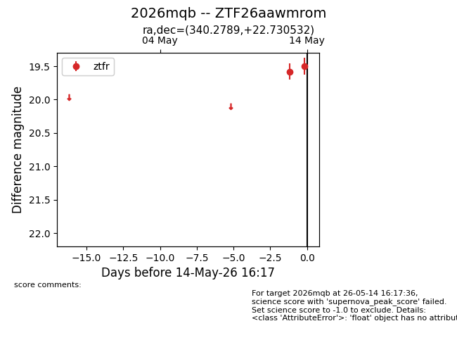
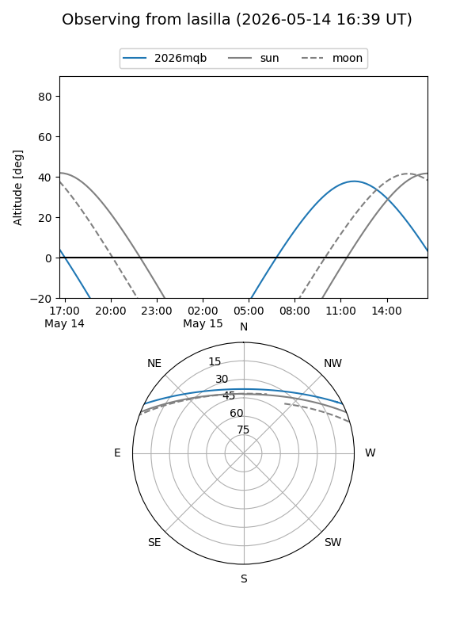
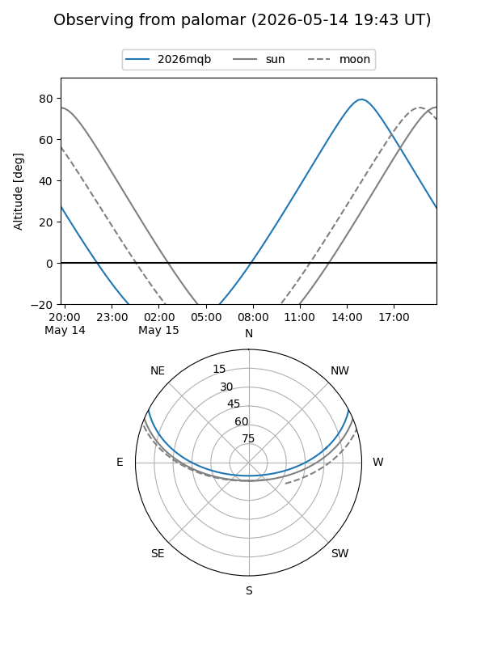
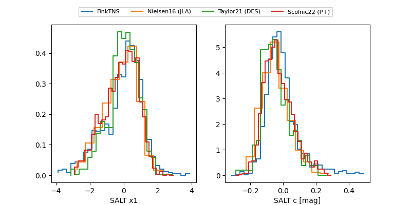

2026mqb
Target 2026mqb at 2026-05-14 16:19
Aliases and brokers:
FINK: link
Lasair: link
ALeRCE: link
TNS: link
YSE: link
alt names
ZTF26aawmrom (ztf,fink_ztf)
2026mqb (tns,yse)
Coordinates:
equatorial (ra, dec) = 340.2789,+22.73053
equatorial (HMS+DMS) = 22:41:06.94,+22:43:49.92
galactic (l, b) = (87.5088,-31.03078)
Flags:
Photometry:
last ztfr=19.50
2 ztfr detections
Lightcurve

Visibility


Additional plots
